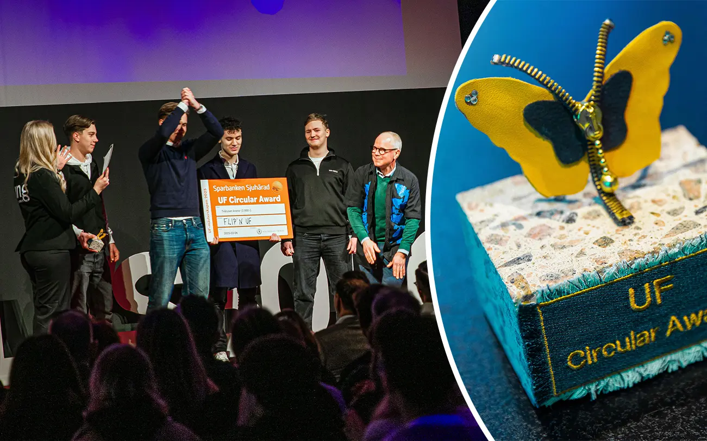

CV - Kevin Bud
Allmänt
Utbildning
Militär
Företagande
Välkommen till
mitt CV
Här kan du läsa om min utbildning,
mina erfarenheter och vad jag brinner för.

Mitt Företag
Under gymnasietiden har jag även fått erfarenhet av att arbeta med entreprenörskap. I årskurs två, då jag läste företagsekonomi som individuellt val, startade jag tillsammans med klasskamrater ett företag med fokus på återförsäljning och transport av möbler. Vår affärsmodell byggde på cirkulära principer, där vi ville bidra till en mer hållbar konsumtion. Genom hårt arbete och samarbete lyckades vi vinna Circular Award första pris i Sjuhärad, vilket var ett bevis på både vår kreativitet och vårt engagemang.
Denna erfarenhet gav mig en tydlig bild av vad det innebär att driva ett företag från idé till verklighet, med allt från planering och logistik till marknadsföring och försäljning. Jag fick också förståelse för vikten av att arbeta med långsiktighet och miljömedvetenhet i affärsverksamhet. Efter kursens slut avvecklade vi företaget, men jag tog med mig många lärdomar som jag kan använda i framtida sammanhang.